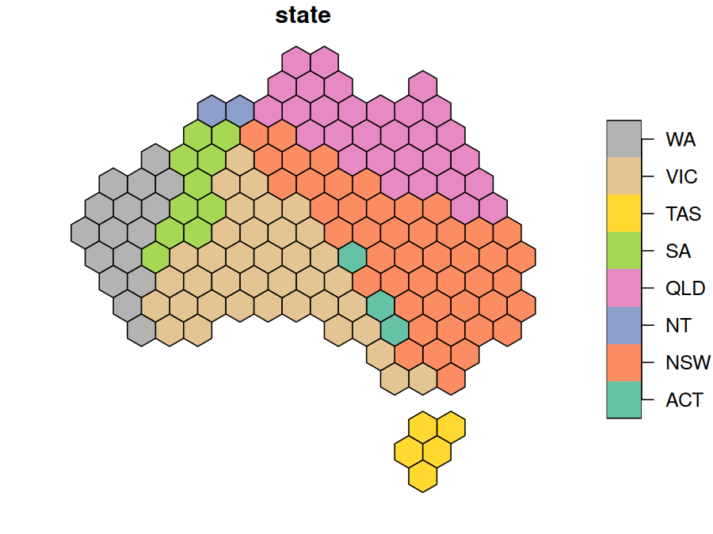
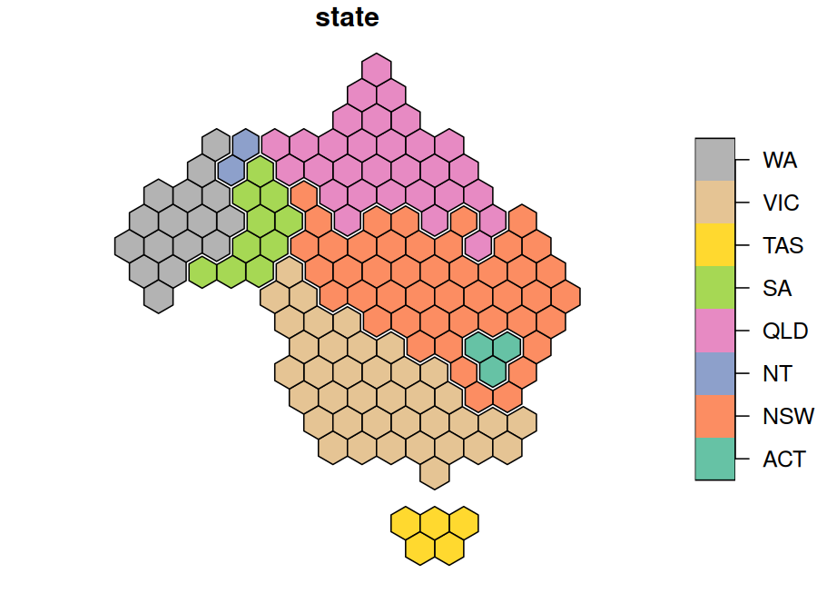
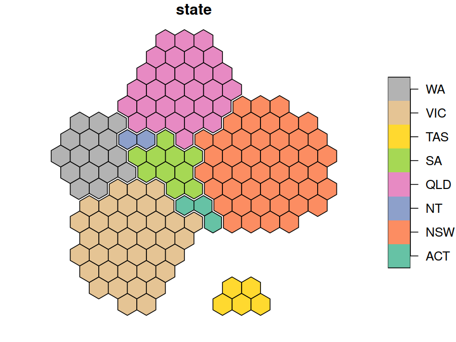
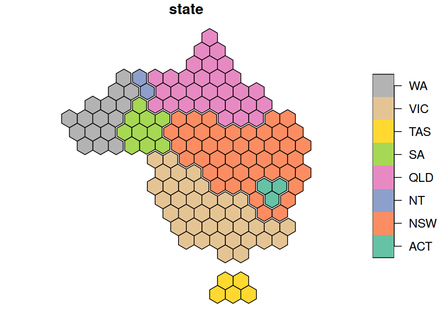

hexmap converts a map of regions into a map of equally sized hexagons, one for each region. Every region gets the same amount of ink, so small but important regions (such as inner-city electorates) are as visible as large, sparsely populated ones, while each region stays close to where it is on the map.
Installation
Install the development version from GitHub with:
install.packages("remotes")
remotes::install_github("mitchelloharawild/hexmap")Usage
hexmap() replaces each region of an sf object with a hexagon, keeping every other column and the order of the rows. Regions are placed to keep their relative positions, and distant islands such as Tasmania are tiled separately.
library(hexmap)
hex <- hexmap(aus_election_2025)
hex
#> Simple feature collection with 150 features and 3 fields
#> Geometry type: POLYGON
#> Dimension: XY
#> Bounding box: xmin: -2025236 ymin: -2169045 xmax: 1989468 ymax: 1694106
#> Projected CRS: +proj=laea +lat_0=-26.85 +lon_0=133.28
#> # A tibble: 150 × 4
#> division state party geometry
#> * <chr> <chr> <chr> <POLYGON [m]>
#> 1 Adelaide SA ALP ((-930317.1 359562.8, -1051975 429801.9, -1051975 5702…
#> 2 Aston VIC ALP ((286260 -483306.5, 164602.3 -413067.4, 164602.3 -2725…
#> 3 Ballarat VIC ALP ((-1173633 -483306.5, -1295290 -413067.4, -1295290 -27…
#> 4 Banks NSW ALP ((1137864 -694023.9, 1016206 -623784.8, 1016206 -48330…
#> 5 Barker SA LP ((-930317.1 -61871.87, -1051975 8367.24, -1051975 1488…
#> 6 Barton NSW ALP ((1259522 -904741.2, 1137864 -834502.1, 1137864 -69402…
#> 7 Bass TAS ALP ((1259522 -1747611, 1137864 -1677371, 1137864 -1536893…
#> 8 Bean ACT ALP ((772890.8 -904741.2, 651233.1 -834502.1, 651233.1 -69…
#> 9 Bendigo VIC ALP ((-687001.7 359562.8, -808659.4 429801.9, -808659.4 57…
#> 10 Bennelong NSW ALP ((1137864 -272589.2, 1016206 -202350.1, 1016206 -61871…
#> # ℹ 140 more rows
plot(hex["state"])
Use group to keep the hexagons of each group, such as a state, together and touching the same neighbouring groups as on the map:

Use layout to choose how the groups are arranged. See vignette("layouts") for how the layouts compare.
hex <- hexmap(aus_election_2025, group = state, layout = layout_compact())
plot(hex["state"])
The hexagons are regular in the projection they are made in, which is an equal-area projection for longitude/latitude maps unless you choose one with crs. See vignette("projections").

Given a geometry column, hexmap() returns a geometry column of hexagons, so you can keep both:
aus_election_2025 |>
dplyr::mutate(hex = hexmap(geometry, group = state))
#> Simple feature collection with 150 features and 3 fields
#> Active geometry column: geometry
#> Geometry type: MULTIPOLYGON
#> Dimension: XY
#> Bounding box: xmin: 112.9282 ymin: -43.63201 xmax: 153.6299 ymax: -10.0599
#> Geodetic CRS: GDA2020
#> # A tibble: 150 × 5
#> division state party geometry hex
#> * <chr> <chr> <chr> <MULTIPOLYGON [°]> <POLYGON [m]>
#> 1 Adelaide SA ALP (((138.6264 -34.96455, 138.6… ((-194541.5 263194.1, -1…
#> 2 Aston VIC ALP (((145.3043 -37.82152, 145.2… ((983055.9 -1368533, 983…
#> 3 Ballarat VIC ALP (((144.4153 -37.38247, 144.3… ((-194541.5 -552669.3, -…
#> 4 Banks NSW ALP (((151.0724 -33.92941, 150.9… ((1218575 -552669.3, 121…
#> 5 Barker SA LP (((138.8476 -34.68052, 138.9… ((-430061 -144737.6, -43…
#> 6 Barton NSW ALP (((151.1301 -33.98377, 151.1… ((1701390 -967399.9, 170…
#> 7 Bass TAS ALP (((148.116 -40.51267, 148.11… ((1218575 -2184396, 1218…
#> 8 Bean ACT ALP (((148.8042 -35.71401, 148.8… ((1571855 -756635.2, 167…
#> 9 Bendigo VIC ALP (((144.8124 -37.21391, 144.8… ((-312301.3 -348703.5, -…
#> 10 Bennelong NSW ALP (((151.0733 -33.81869, 151.1… ((1336335 -348703.5, 133…
#> # ℹ 140 more rowsExample: the 2025 Australian federal election
Labor won 94 of the 150 seats at the 2025 Australian federal election. On a geographic map the result looks like a Coalition win, as the large rural divisions hide Labor’s many small city seats. A cartogram produced with cartogram, which distorts regions so their areas are proportional to a variable, can give each division an equal area to show the number of seats, but it distorts the map beyond recognition. A hexagon grid produced with geogrid, which allocates regions to a regular grid of hexagons or squares, gives each division the same space, but doesn’t keep states together. hexmap keeps each state together, in its place and with its neighbours.

The results are included as aus_election_2025: the simplified boundaries of each division from the Australian Bureau of Statistics, with its state and winning party from the Australian Electoral Commission (CC BY 4.0). The maps below use the Australian Albers equal-area projection, with minor parties combined:
library(sf)
library(hexmap)
party <- c(ALP = "Labor", LP = "Coalition", LNP = "Coalition", NP = "Coalition",
GRN = "Greens")
election <- st_transform(aus_election_2025, 3577)
election$party <- ifelse(election$party %in% names(party), party[election$party], "Other")Each method gives every division the same area:
library(cartogram)
library(geogrid)
# Cartogram
election$seats <- 1
election_cartogram <- cartogram_cont(election, "seats", itermax = 20)
# geogrid
grid <- calculate_grid(election, grid_type = "hexagonal", seed = 1)
election_geogrid <- assign_polygons(election, grid)
# hexmap
election_hexmap <- hexmap(election, group = state)
Colouring the divisions by state shows the difference: geogrid scatters each state’s divisions across the grid, putting four of Tasmania’s five seats on the mainland, while hexmap keeps each state in one piece, touching the same states as on the map.